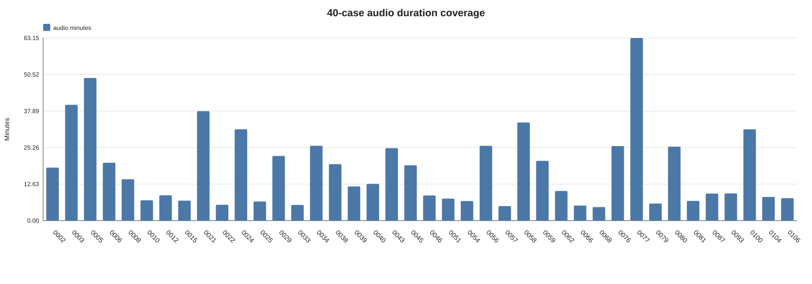
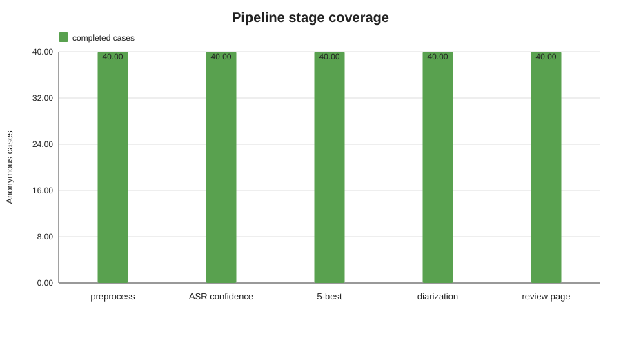
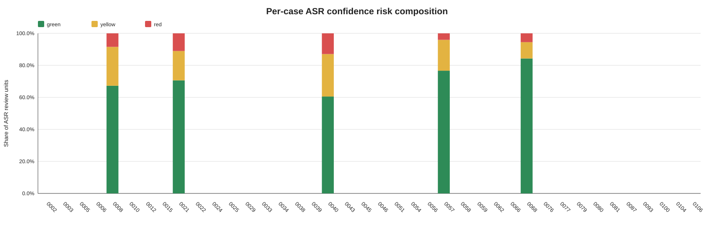
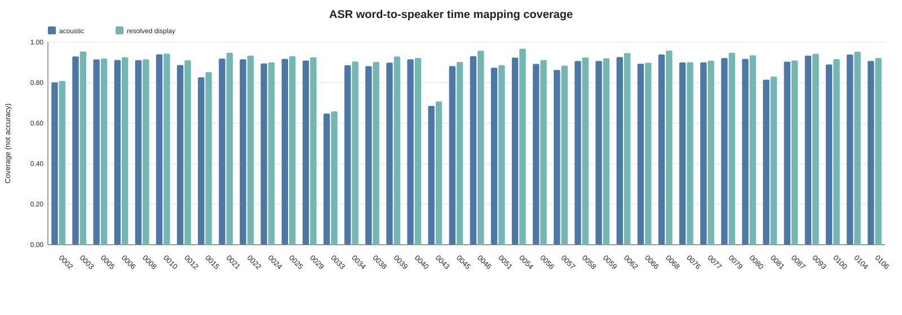
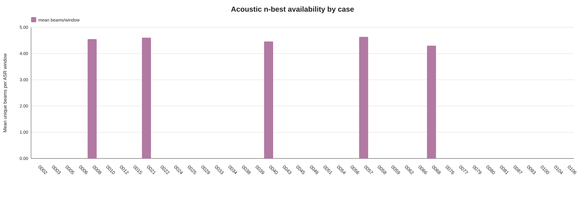

中文 40 例 ASR 工程运行总览
工程覆盖不等于准确率。 本页没有人工 reference；speaker map 是时间映射覆盖率。代理质量结果来自固定 5 例， 所有病例整理均为研究输出，不构成临床建议。
病例覆盖40/40
音频时长710.4 min
ASR 窗口1442
ASR 单元75228
空 ASR 窗口1
全红兜底窗口9
缺时间戳单元21
n-best beams6565
医学候选覆盖85/447 (19.0%)
diarization40/40
speaker map88.9%
ASR RTF0.0164
ASR CUDA peak2.46 GiB
逐例工程表
| case | min | windows | words | empty | G/Y/R | beams | speakers | acoustic map | resolved map |
|---|---|---|---|---|---|---|---|---|---|
| case_0002 | 18.3 | 37 | 3351 | 0 | 2054/832/465 | 169 | 4 | 80.2% | 80.9% |
| case_0003 | 40.0 | 81 | 3423 | 0 | 2894/450/79 | 361 | 4 | 93.0% | 95.4% |
| case_0005 | 49.3 | 99 | 2711 | 0 | 1125/1016/570 | 437 | 4 | 91.5% | 91.9% |
| case_0006 | 20.0 | 41 | 3303 | 0 | 2553/524/226 | 200 | 4 | 91.2% | 92.6% |
| case_0008 | 14.3 | 29 | 923 | 0 | 711/172/40 | 132 | 4 | 91.1% | 91.5% |
| case_0010 | 7.0 | 15 | 1223 | 0 | 1072/124/27 | 71 | 4 | 94.0% | 94.4% |
| case_0012 | 8.7 | 18 | 683 | 0 | 520/130/33 | 81 | 3 | 88.7% | 91.1% |
| case_0015 | 6.9 | 14 | 1110 | 0 | 993/92/25 | 68 | 4 | 82.7% | 85.2% |
| case_0021 | 37.9 | 76 | 4951 | 0 | 3832/768/351 | 352 | 4 | 91.9% | 94.7% |
| case_0022 | 5.5 | 11 | 771 | 0 | 579/146/46 | 54 | 4 | 91.6% | 93.4% |
| case_0024 | 31.6 | 64 | 3540 | 0 | 2382/867/291 | 307 | 4 | 89.5% | 90.0% |
| case_0025 | 6.6 | 14 | 910 | 0 | 609/228/73 | 58 | 4 | 91.8% | 93.1% |
| case_0029 | 22.4 | 45 | 3914 | 0 | 2849/755/310 | 209 | 4 | 90.9% | 92.5% |
| case_0033 | 5.4 | 11 | 752 | 0 | 516/154/82 | 49 | 4 | 64.8% | 65.8% |
| case_0034 | 25.9 | 52 | 3558 | 0 | 2989/444/125 | 250 | 4 | 88.6% | 90.4% |
| case_0038 | 19.5 | 40 | 2566 | 0 | 1748/581/237 | 183 | 4 | 88.2% | 90.3% |
| case_0039 | 11.8 | 24 | 1448 | 0 | 1124/195/129 | 113 | 4 | 89.9% | 93.0% |
| case_0040 | 12.7 | 26 | 1870 | 0 | 1307/423/140 | 116 | 4 | 91.6% | 92.2% |
| case_0043 | 25.0 | 51 | 814 | 0 | 173/258/383 | 206 | 4 | 68.6% | 70.8% |
| case_0045 | 19.1 | 39 | 695 | 1 | 311/196/188 | 171 | 4 | 88.2% | 90.2% |
| case_0046 | 8.7 | 18 | 1539 | 0 | 1337/148/54 | 88 | 4 | 93.1% | 95.8% |
| case_0051 | 7.6 | 16 | 954 | 0 | 682/203/69 | 75 | 4 | 87.4% | 88.7% |
| case_0054 | 6.8 | 14 | 1443 | 0 | 1329/95/19 | 65 | 3 | 92.4% | 96.7% |
| case_0056 | 25.9 | 52 | 2934 | 0 | 2095/645/194 | 240 | 4 | 89.3% | 91.2% |
| case_0057 | 5.0 | 11 | 985 | 0 | 835/127/23 | 51 | 4 | 86.3% | 88.4% |
| case_0058 | 34.0 | 68 | 1898 | 0 | 1329/411/158 | 297 | 4 | 90.7% | 92.5% |
| case_0059 | 20.7 | 42 | 2466 | 0 | 1884/375/207 | 186 | 4 | 90.7% | 92.1% |
| case_0062 | 10.2 | 21 | 1812 | 0 | 766/585/461 | 96 | 4 | 92.7% | 94.6% |
| case_0066 | 5.2 | 11 | 845 | 0 | 684/127/34 | 53 | 4 | 89.3% | 89.8% |
| case_0068 | 4.7 | 10 | 726 | 0 | 642/60/24 | 43 | 4 | 93.9% | 95.9% |
| case_0076 | 25.8 | 52 | 811 | 0 | 111/244/456 | 217 | 4 | 90.0% | 90.1% |
| case_0077 | 63.2 | 127 | 3844 | 0 | 2328/1050/466 | 582 | 4 | 90.0% | 90.9% |
| case_0079 | 5.9 | 12 | 1052 | 0 | 679/199/174 | 54 | 2 | 92.2% | 94.8% |
| case_0080 | 25.6 | 52 | 2283 | 0 | 1538/471/274 | 248 | 4 | 91.8% | 93.5% |
| case_0081 | 6.8 | 14 | 1064 | 0 | 536/362/166 | 68 | 4 | 81.5% | 83.0% |
| case_0087 | 9.3 | 19 | 1486 | 0 | 1187/233/66 | 90 | 4 | 90.4% | 91.0% |
| case_0093 | 9.4 | 19 | 843 | 0 | 613/155/75 | 81 | 4 | 93.4% | 94.3% |
| case_0100 | 31.6 | 64 | 3573 | 0 | 2630/621/322 | 298 | 2 | 89.0% | 91.6% |
| case_0104 | 8.2 | 17 | 1019 | 0 | 529/216/274 | 75 | 3 | 93.9% | 95.3% |
| case_0106 | 7.8 | 16 | 1135 | 0 | 584/364/187 | 71 | 4 | 90.7% | 92.2% |
图表




